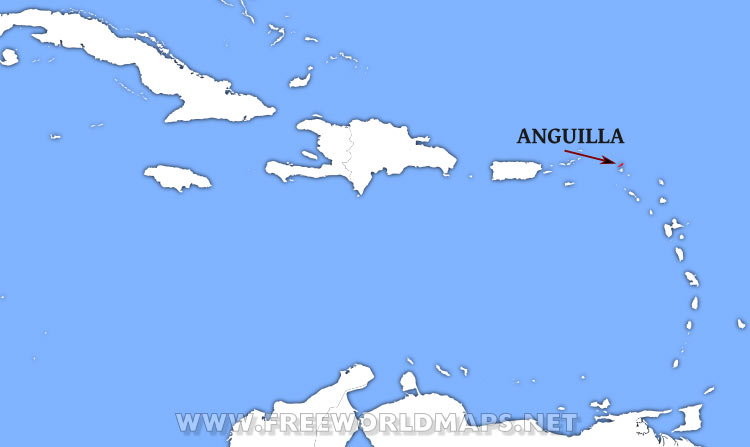
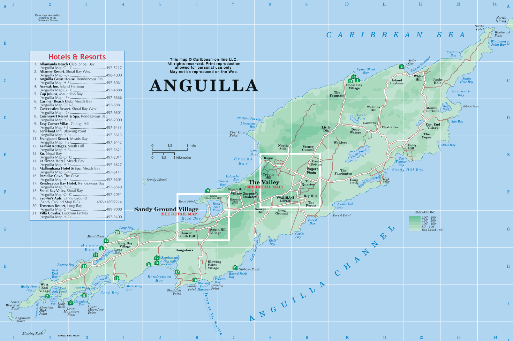
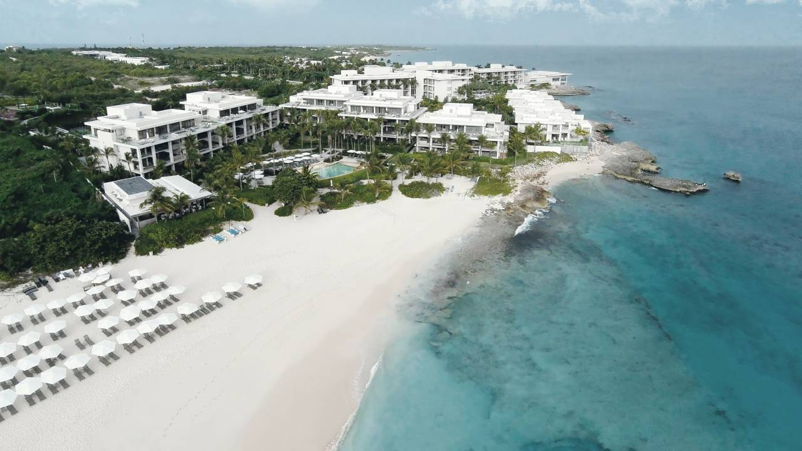
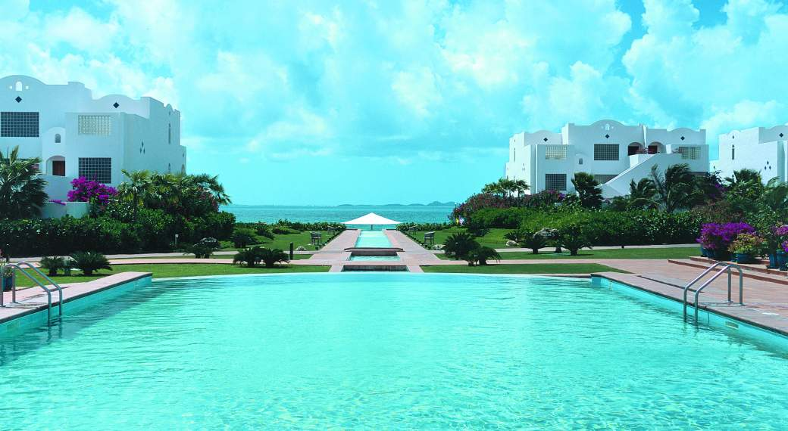
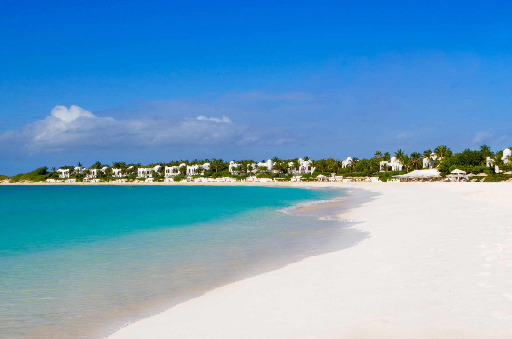
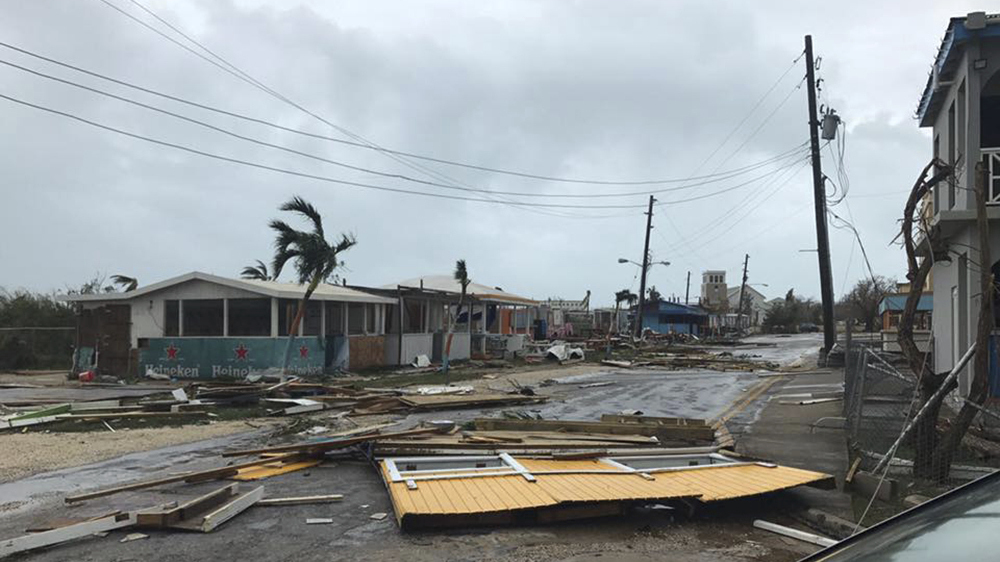
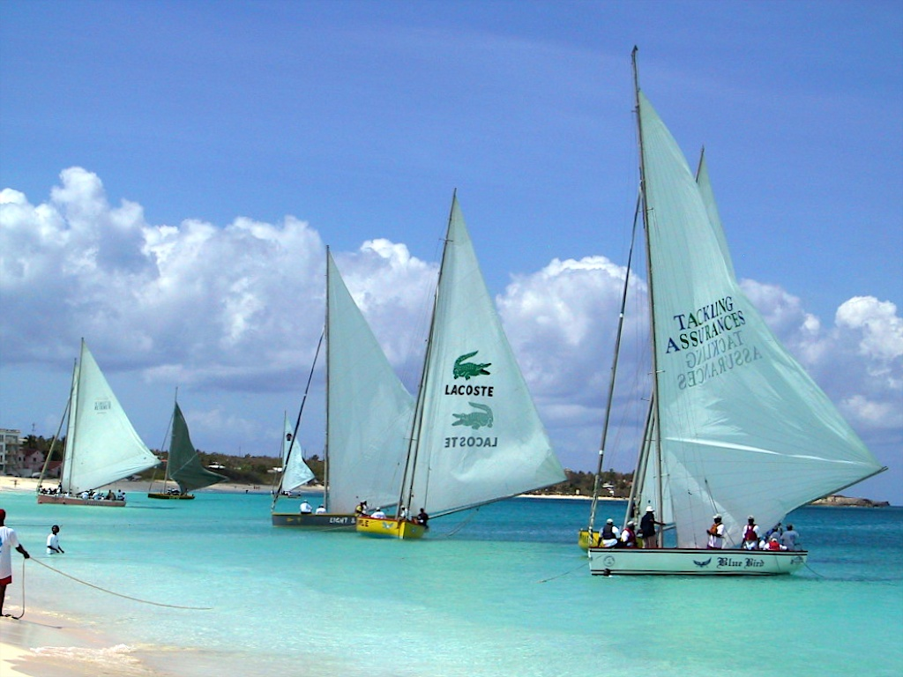
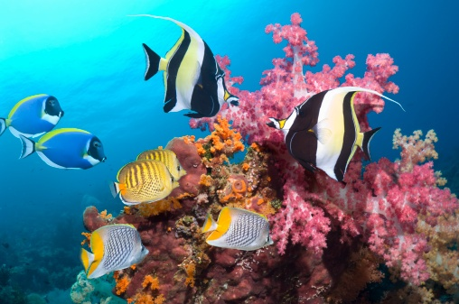
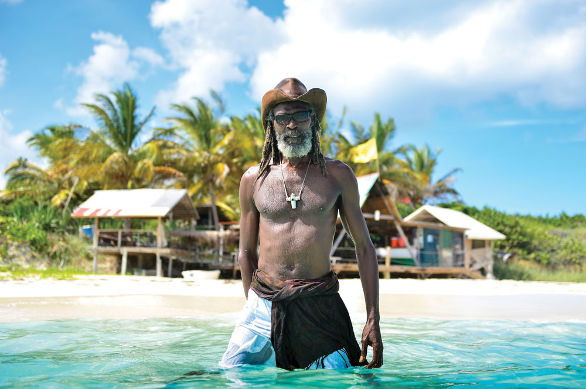
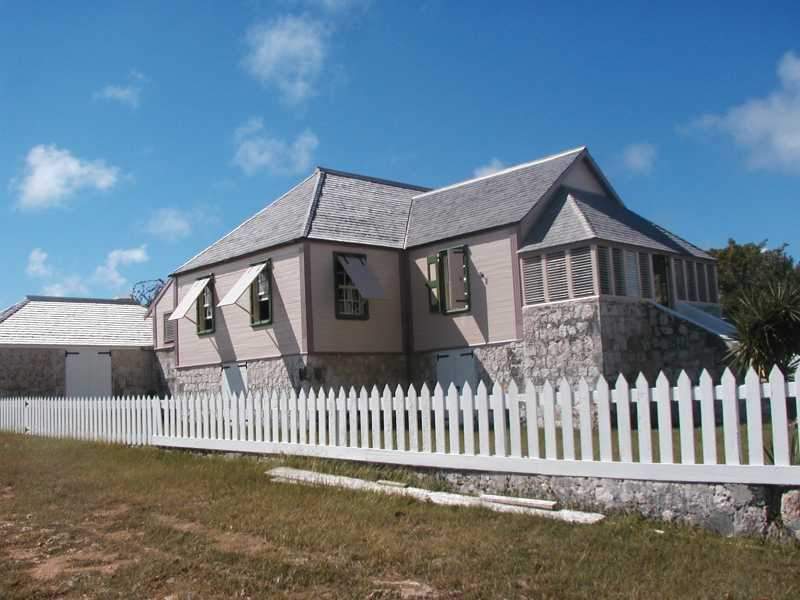

Anguilla Gallery

As you can see Anguilla is one of the smallest islands in the Caribbean. Its closest neighbour is the island of Saint-Martin.

This is a map of the whole island. Its population is currently 15,000 and many of the natives live in poverty.

Anguilla is home to two large resorts one of which is the Four Seasons. They offer huge amounts of employment to the island and draw in huge revenue.

This is the Cuisineart resort. On one of the days of our visit we received a tour of the luxury resort. My uncle, who we were visiting, was the head engineer at the resort and wanted to show us his many projects

Luxurious villas line the coasts of Anguilla. They are summer homes for the wealthy and many lie idle for most of the year.

Anguilla is famous for its white beaches and crystal blue water. The locals love their piece of paradise and minimise their effect on the islands beauty.

Anguilla suffers greatly during storm season and has been flattened by hurricanes in the past leaving the locals without homes. The resorts take huge damage during these times and often have to close for months for repairs.

Boat racing has deep roots in Anguilla's culture and is the national sport. Races could be seen taking place in the bay during my visit on most days.

The waters around Anguilla are jumping with life and the reefs are thriving and are highly populated with species rarely found in other parts of the world.

Above is the pride of Anguilla, Banky Banx. He is a musician famous for his reggae. He owns a local bar, seen in the background, that I visited while on the island.

The Valley is the capital of Anguilla and has a population of 1,000. It holds examples of colonial architecture which can be seen above.